- Módulo: Administración de Sistemas Operativos
- Título del trabajo
- Componentes del grupo: Alejandro Garcia Yumar
- Curso Académico: 2015/2016
- Fecha de entrega: 13/03/2015
El ejercicio consiste en instalar y utilizar un servicio samba para poder compartir archivos entre este servidor, y un windows y un linux.
Para empezar a trabajar debemos instalar en nuestro servidor linux el sistema samba, para conpartir los distintos archivos.
Una vez instalado debemos crear los distintos usuarios que emplearemos en la practica.
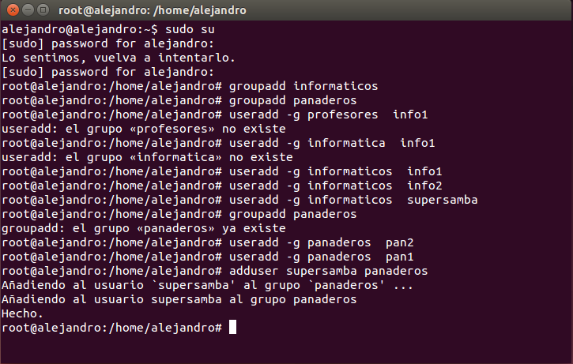Una vez creados, creamos las carpetas en que se colocaran los documentos de estos usuarios. tambien por seguridad haremos una copia de los documentos por defecto de samba.
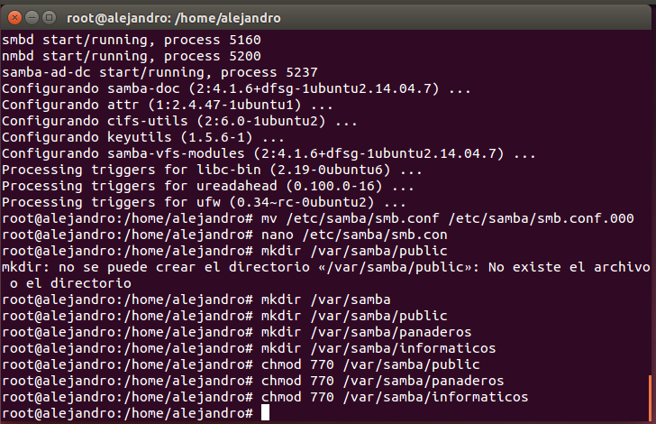Añadimos los usuarios a los grupos.
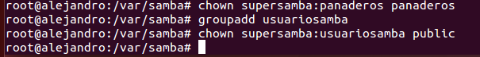Le damos los permisos de las carpetas creadas antes para los distintos usuarios.
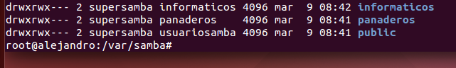Creamos las contraseñas de samba para los usuarios.
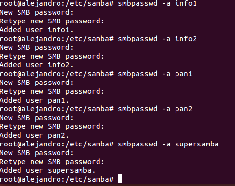Utilizamos pdbedit -L luego para comprobar si se hizo de forma correcta.
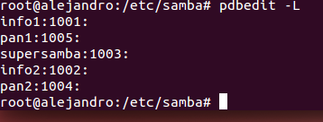Utilizamos netstat -tap y testparm para ver si esta al a escucha despues de haber reiniciado el samba.
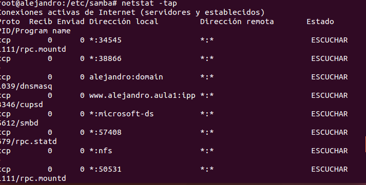 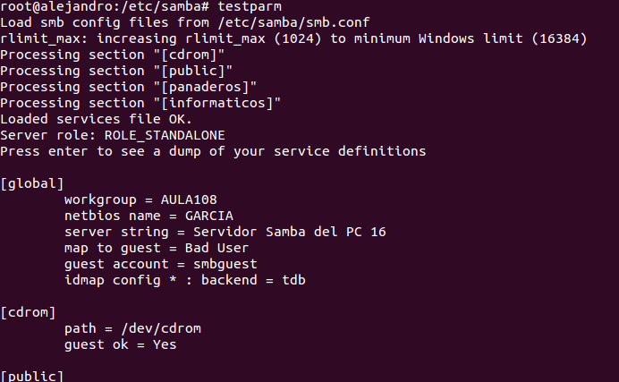Ahora solo debemos irnos a windows y buscar por la red nuestras carpetas compartidas, buscando el nombre de nuestro equipo.
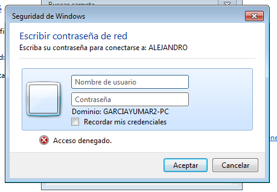Nos logueamos con info1.
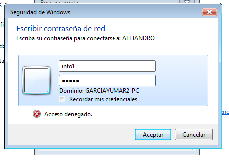Si creamos un documento en el servidor, lo veremos en el cliente windows y podremos modificarlo.
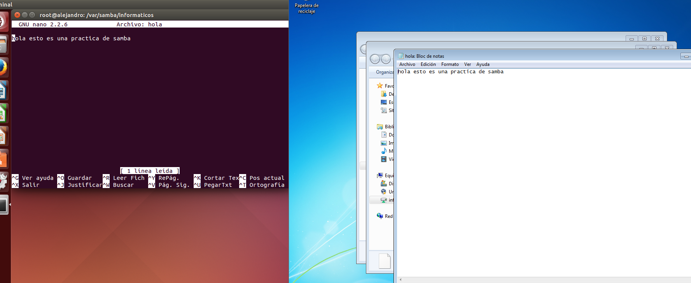Con smbstatus podemos ver si se ha hecho la coneccion de formsa correcta.
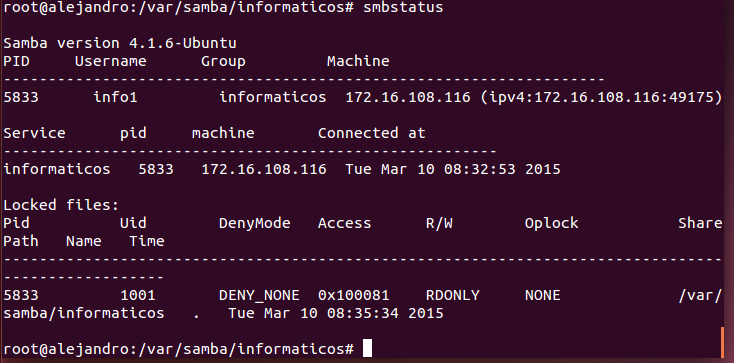Usamos net use para liberar la conección.
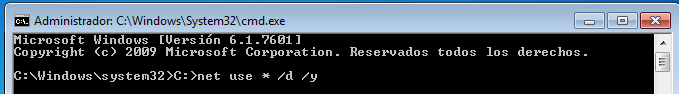Probamos conectandonos con panaderos tambien.
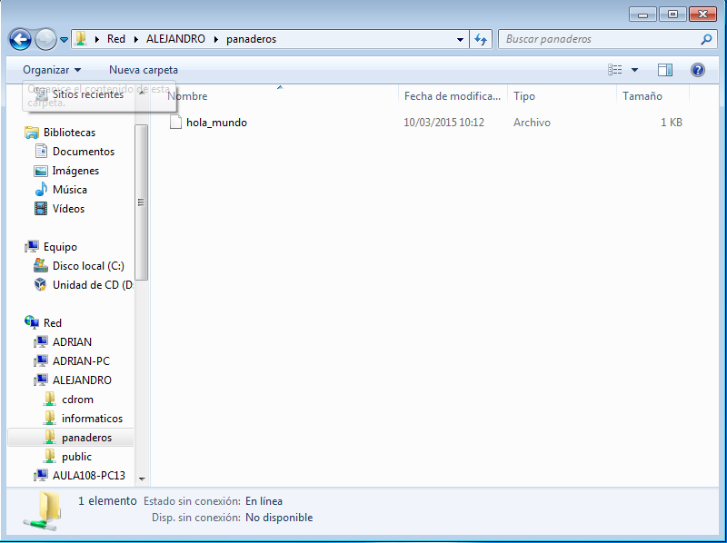Ahora probamos conectandonos por comandos.
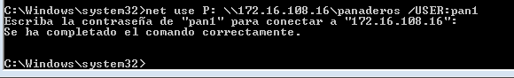Podemos comprobar que se conecta de forma correcta.
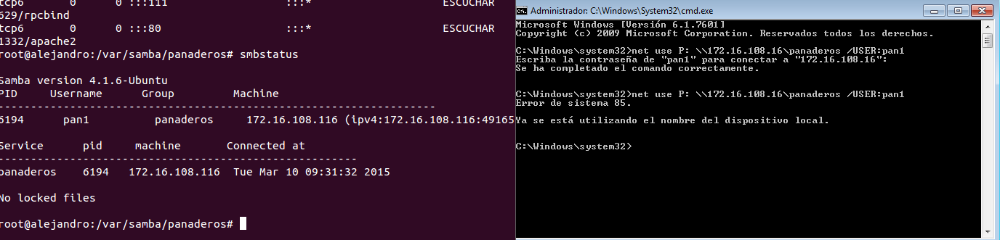Nos saldra de nuevo la ventana de los documentos.
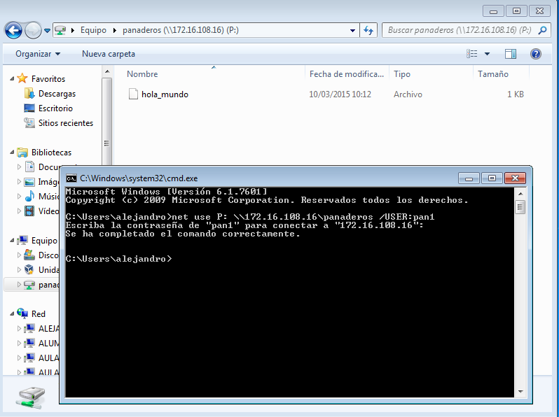Para terminar ahremos el mismo proceso en otro linux.
Volvemos a buscar por red nuestro equipo, y a loguearnos para acceder a los documentos.
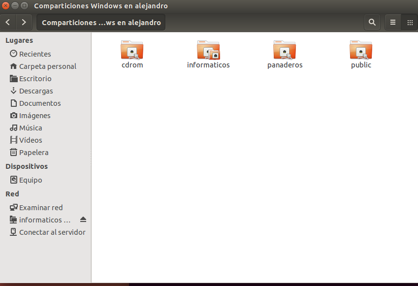 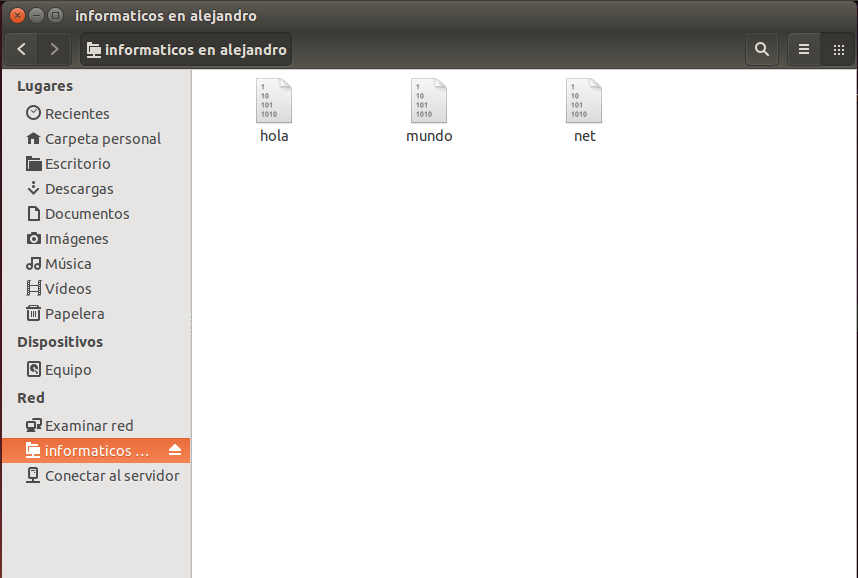Debido a un fallo en la maquina cliente que no se llego ha descubrir, solo se permitia entrar a los documentos en modo lectura.
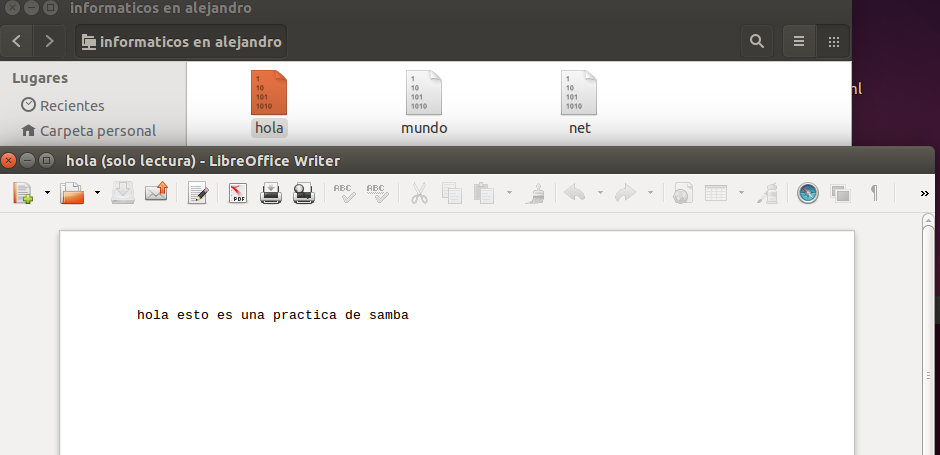Panaderos
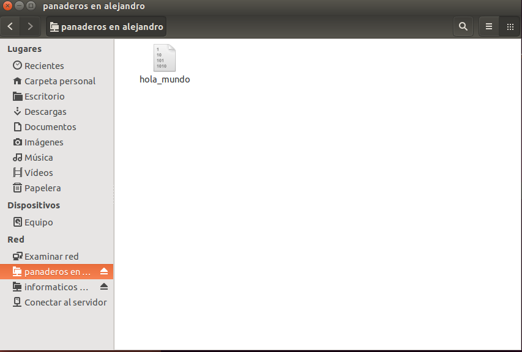Probamos con comandos, poniendo smbclient --list ip-servidor-samba para ver los recursos que ofrece.
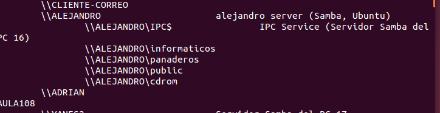Ahora desde el cliente que tenemos configurado con una ip estatica, le intalamos un nmap, si no lo tiene ya, para buscar los recursos que ofrece el servidor.
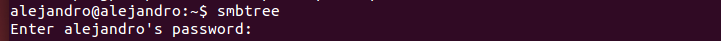 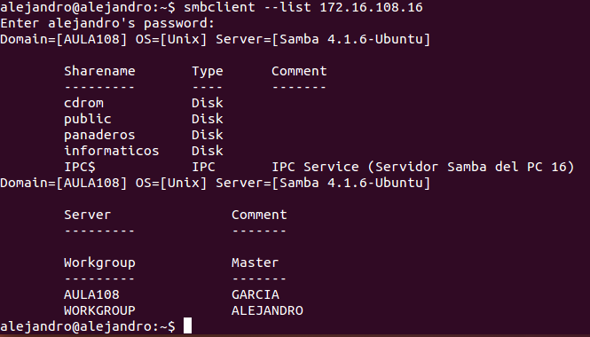Debido al problema con que solo permite lectura, debi ir a otro equipo a conectarme por comandos, demostrando que solo era un problema con la otra maquina virtual.
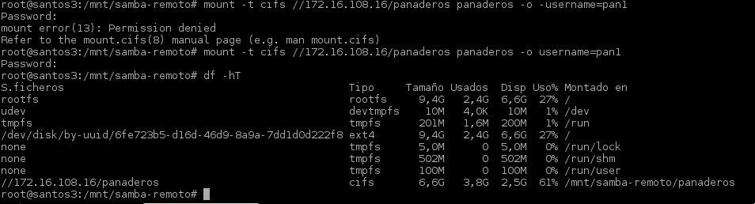Creamos las carpetas donde montaremos las del servidor, y las montamos luego en ellas con los siguentes comandos.

Ahora creamos un documento en el servidor y podremos modicarlos en el cliente, como en la imagen.